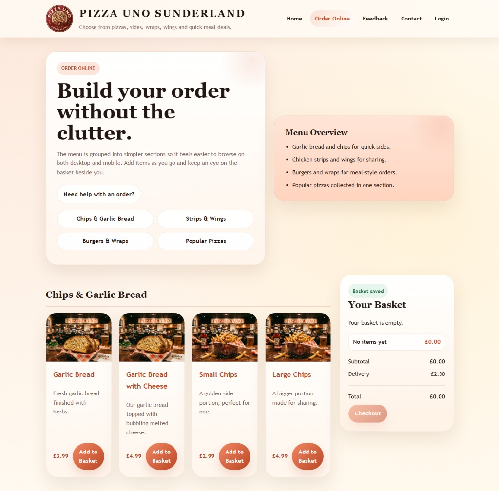
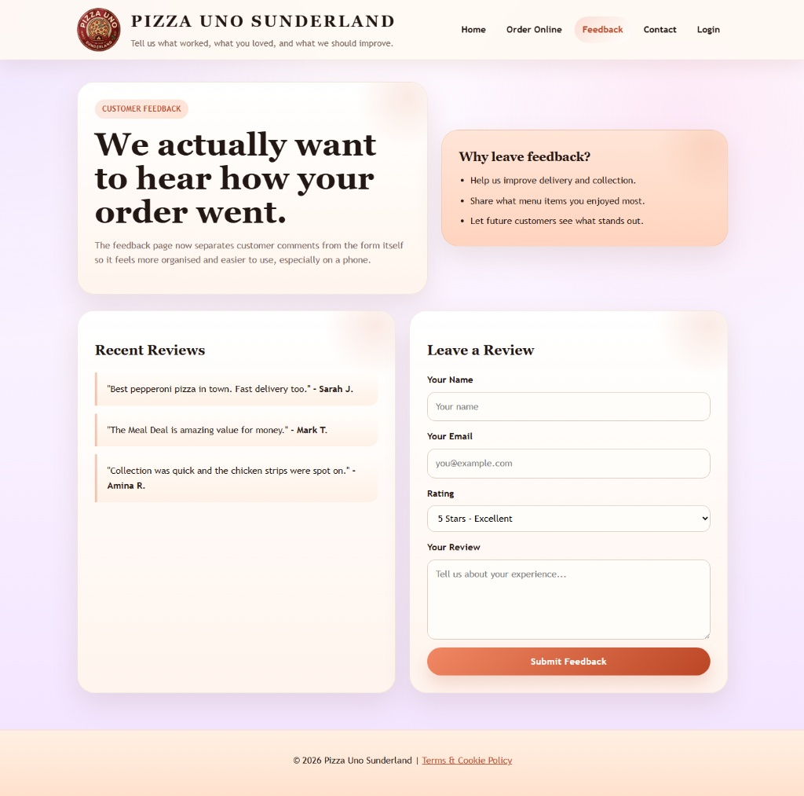
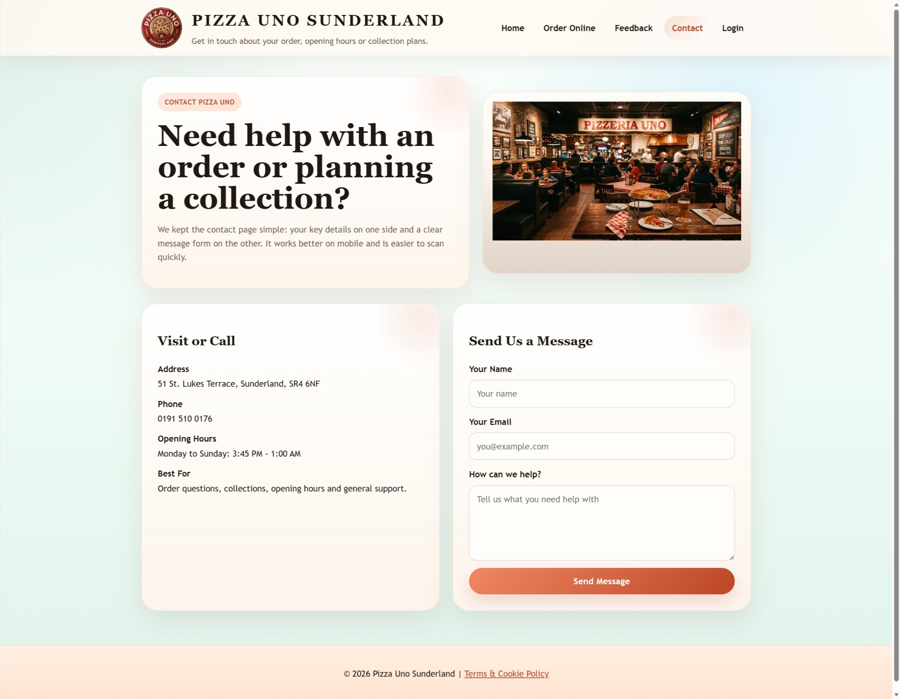
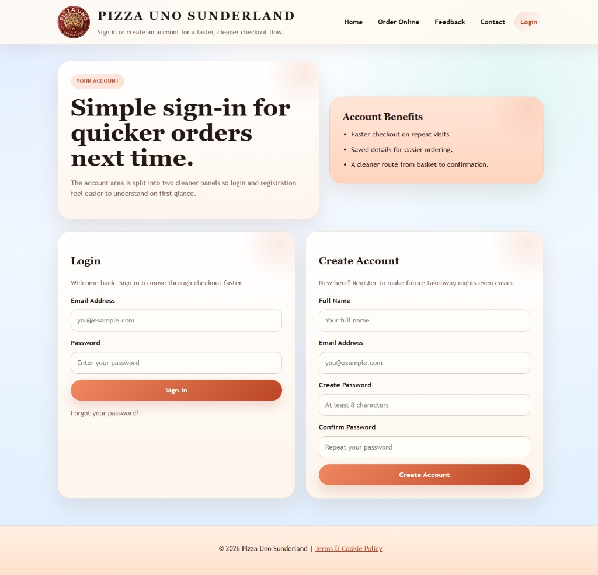

This archived report provides a fuller breakdown of the Pizza Uno Sunderland website, analysing structure, content, and user experience across its main customer-facing pages. It sits alongside the premium case study so both the polished summary and the original report-style thinking remain available.
1. Home Page
The home page acts as the digital storefront, placing the food offer and brand identity first. It immediately frames Pizza Uno around wood-fired pizza, freshness, and value-led ordering.
- Visual branding: Strong food-led imagery and immediate product cues.
- Key messaging: A direct emphasis on authenticity and fresh ingredients.
- Promotional offers: Family Feast for £29.99, Meal Deal for £19.99, and Any Large Pizza for £9.99 collection.
- Functionality: Basket visibility and cookie consent appear early in the experience.
The landing page is designed to tell the customer what the brand offers quickly, with pricing and promotional logic visible early in the journey.
2. Order Online
The ordering page is the functional core of the site. It is built around menu browsing, add-to-basket actions, and immediate price visibility rather than decorative presentation.
- User interface: JavaScript-powered add-to-basket actions with live price changes.
- Basket integration: A visible subtotal paired with a flat £2.50 delivery fee.
- Commercial role: Encourages quick conversion by reducing uncertainty during ordering.

This screen shows the project's strongest e-commerce utility: direct selection, immediate pricing, and little friction between browsing and adding items.
3. Feedback
The feedback page is a simple engagement layer designed to collect reviews and support trust-building around the business.
- Form fields: Name, email, and a review text area.
- Purpose: Encourages customer response and creates the basis for visible social proof.

Although simple, this page plays a credibility role by giving users a clear place to leave public-facing sentiment and feedback.
4. Contact Us
The contact page handles location and communication needs for local customers, supporting both collection and practical service information.
- Location: Clear local targeting for Sunderland customers.
- Tools: Map support to help users reach the restaurant for collection.
- Utility: Reduces uncertainty around how to find and contact the business.

This page focuses on logistics rather than persuasion, helping the user complete real-world tasks quickly and without confusion.
5. Login and Account
The account page acts as a retention layer for returning users by supporting saved details and repeat ordering behaviour.
- Retention: Save addresses and favourite orders for quicker checkout.
- Customer value: Makes repeat use easier for regular local customers.

The account layer supports repeat ordering and helps move the site from one-off transaction tool to reusable customer channel.
6. Technical and Business Observations
From a business perspective, the site works because it avoids unnecessary complexity. It behaves like a direct local-commerce tool: present the offer, keep the ordering path clear, and support fast decisions. From a technical perspective, the lightweight stack makes the experience easy to host and easy to reason about.
"The site succeeds because it tells the user what the food looks like, what it costs, and how to get it with very little friction."Archive Pull Quote
7. Conclusion
The Pizza Uno website is effective precisely because it is not trying to be overly complex. It prioritises speed, clarity, and useful information over decorative excess. For a local restaurant, that makes it commercially practical and structurally focused, while still leaving room for a stronger visual and UX upgrade in the rebuilt version.